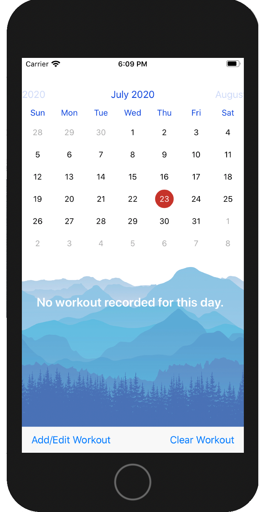
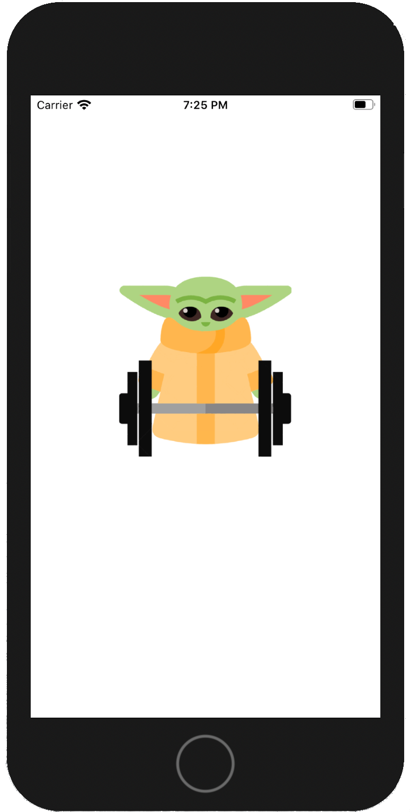
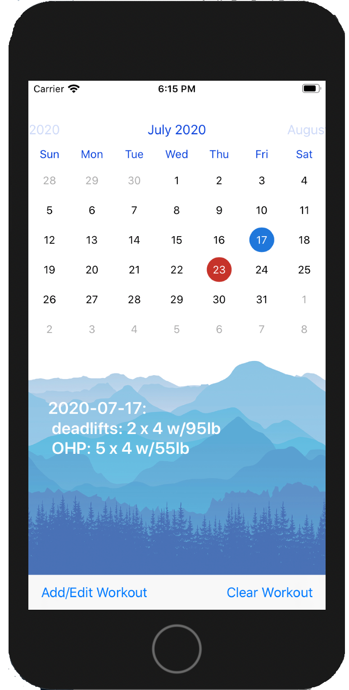
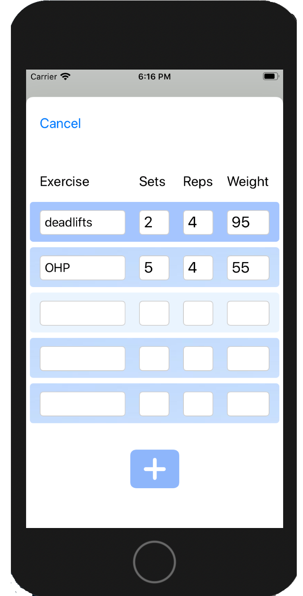
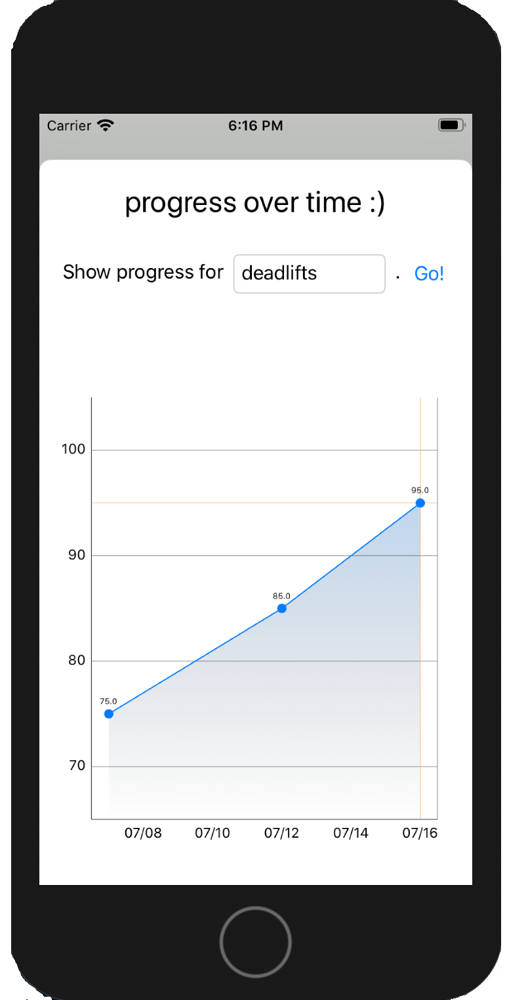
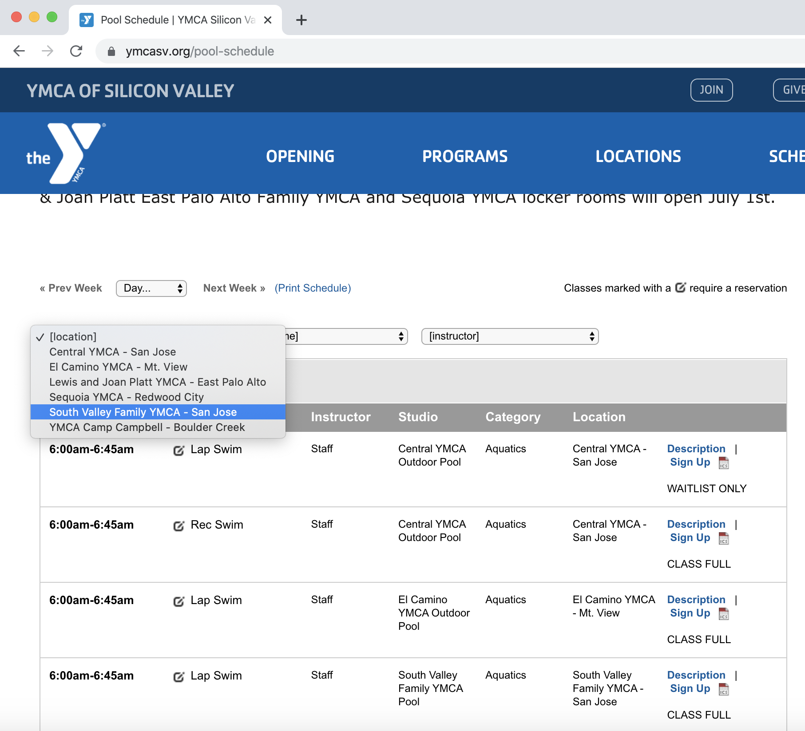
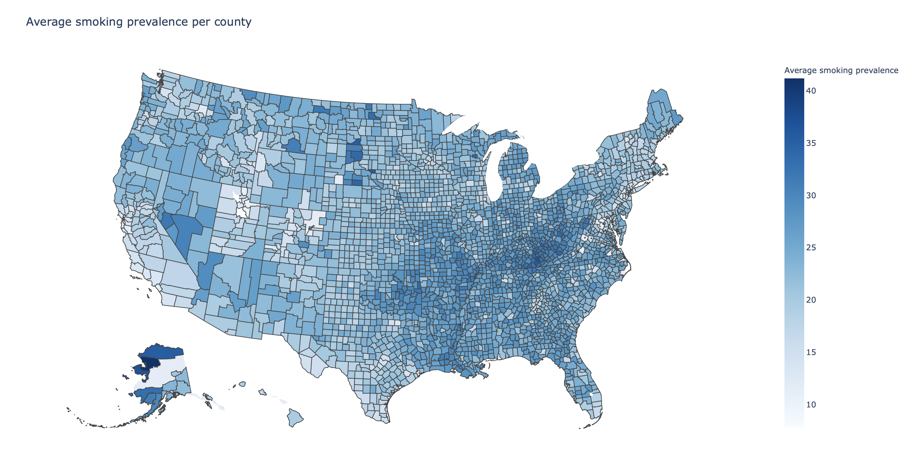

I'm a CS/Math student at Harvey Mudd College, class of 2023. I am also interested in foreign languages and linguistics, and I aspire to combine my passions through work in natural language processing and artificial intelligence. Outside of school, I enjoy lifting weights and working on graphic design for The Muddraker. Check out my coding projects below!

This iOS app is an interactive calendar for logging workouts. It has fields to enter exercise names, sets, reps, and weights used. Swiping up opens the progress screen, where the user can select an exercise, and the app will graph weights used for that exercise over time. View on GitHub.





During COVID-19, swim time slots at the YMCA are very competitive.
Sign ups become available exactly on the hour, and you must be very
quick to register before space is full. This sign-up bot can be programmed
to run at an exact time, and it can register a user in seconds, as compared
to the minutes it would take a human to do so.
Opening the YMCA webpage in an automated browser, the bot filters by date
and location and searches for the desired time. It then clicks the correct buttons
and fills out the required fields to complete the reservation in record time.
View the code on GitHub.

This interactive map, built off data from government health
surveys, highlights the prevalence of smoking as a COVID-19 risk factor across
U.S. counties. I used Pandas to read, clean, and extract the necessary data from
CSV files.
View the code on GitHub.